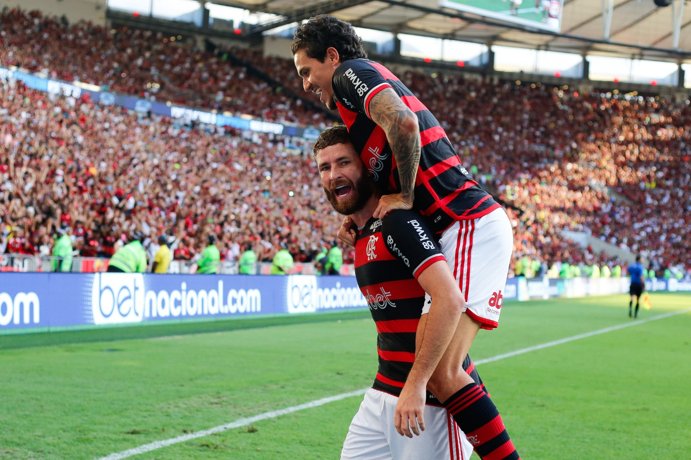
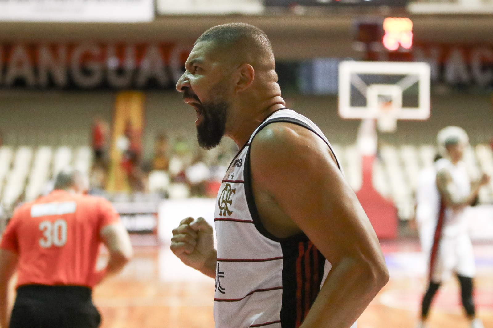

Flamengo vence o Madureira e conquista o 24ª título de Taça Guanabara em sua história
É CAMPEÃO! Pela 24ª vez em sua história, o Flamengo conquistou o título da Taça Guanabara ao vencer o Madureira, por 3 a 0, na tarde deste sábado (2), Maracanã. Arrascaeta, Pedro e Léo Pereira marcaram os gols rubro-negros. Com o primeiro lugar já garantido, o Mengão terá a vantagem do empate tanto nas semifinais quanto numa possível final de Campeonato Carioca.

FlaBasquete impõe seu ritmo e vence o Mogi das Cruzes por 77 a 49, pelo NBB
Jogando em casa pelo NBB, o FlaBasquete teve mais uma atuação segura e venceu o Mogi das Cruzes, por 77 a 49, na noite desta quinta-feira (29), no ginásio do Tijuca Tênis Clube. Olivinha marcou 13 pontos e foi o cestinha da partida.Agora, o Orgulho da Nação vai até a Argentina para enfrentar o Obras Sanitarias, pelas quartas de finais da BCLA.

Flamengo mostra superioridade fora de casa e vence Botafogo pela Copa Rio Feminina
Em mais um clássico pela Copa Rio Feminina, o Flamengo venceu o Botafogo, por 3 a 0, na manhã deste sábado (2), no estádio Ronaldo Nazário, em São Cristóvão. Os gols rubro-negros foram marcados por Cristiane e Gisseli (2). Com o resultado positivo, as Meninas da Gávea assumiram o primeiro lugar da competição no saldo de gols (cinco de vantagem).